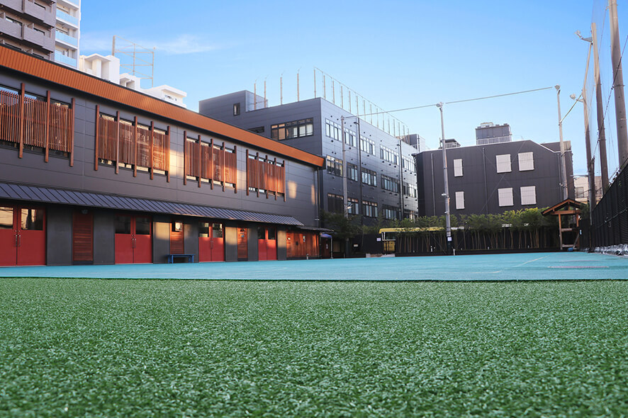

도쿄 인터내셔널 스쿨 교사 건물과 운동장(미나미아자부 캠퍼스) · 사진: TIS Marketing / Wikimedia Commons, CC BY-SA 4.0
도쿄 인터내셔널 스쿨(Tokyo International School) — 고등 과정이 지금 열리는 중, 학년 범위부터 확인하세요
· 도쿄 인터내셔널 스쿨(TIS)(이 글) — 미나토구, IB 과정.
· K 인터내셔널 스쿨 도쿄, 브리티시 스쿨 인 도쿄(BST), 아오바 재팬, 니시마치, ASIJ, 세이센, 세인트메리 는 모두 다른 학교입니다.
· 약칭 TIS는 마카오 국제학교(TIS)와도 겹칩니다. 검색하실 때는 "도쿄"를 반드시 함께 넣으세요.
1. 어떤 학교인가 — 유아 한 교실에서 시작한 IB 학교
도쿄 인터내셔널 스쿨은 1990년대 중반에 유아 한 교실로 시작한 것으로 알려져 있습니다. 설립 연도는 자료마다 1994년·1995년·1997년으로 조금씩 다르게 적혀 있어, 여기서는 1990년대 중반으로만 적겠습니다. 지금은 IB 월드스쿨로 운영되며, 위치는 미나토구 미나미아자부, 가장 가까운 역은 시로카네타카나와역(도쿄메트로 난보쿠선·도에이 미타선)으로 도보 10분 안팎 거리로 안내됩니다.
과정은 IB로 이어집니다.
- 유치원~G5 — IB PYP(초등 과정)
- G6~G10 — IB MYP(중등 과정)
- G11~G12 — IB 디플로마(DP) — 2025-26학년도 G11부터 시작한 것으로 안내
캠퍼스는 도심에 있는 만큼 넓지 않지만, 실내 체육관과 인조잔디 운동장, 예술·음악 공간, 도서관 등을 압축해서 배치한 형태로 소개됩니다. 위 사진이 그 구조를 보여 줍니다. 건물 바로 앞이 운동장입니다. (학생 수·개설 과목 등 해마다 달라지는 수치는 여기에 적지 않습니다. 학교 요강을 직접 확인하세요.)
2. 핵심 — 이 학교는 오랫동안 "G10에서 끝나는 학교"였습니다
여기가 이 학교를 이해하는 중심입니다. IB MYP는 G10에서 끝납니다. 그러니까 디플로마를 운영하지 않던 시절의 이 학교는 구조상 G10까지만 다닐 수 있는 학교였습니다. 재학생들은 G10을 마치면 도쿄의 다른 학교로 옮겨 고등 2년을 마치는 것이 일반적인 경로였습니다.
그런데 2025-26학년도에 G11을 열고 IB 디플로마를 시작한 것으로 안내되고, 그 학생들이 이듬해 G12로 올라가는 순서로 소개됩니다. 즉 고등 과정이 지금 완성되어 가는 중입니다.
이 변화가 가정에 주는 영향은 한 문장으로 정리됩니다. 작년에 읽은 안내와 올해 안내가 다릅니다. 한국어로 된 후기·유학원 글의 상당수는 "G10까지"라고 적힌 시절에 쓰였습니다. 그 글만 보고 "여기는 고등학교가 없구나" 하고 후보에서 빼시면, 지금 기준으로는 틀린 판단이 됩니다. 반대로 "고등학교까지 있다"는 최근 글만 보고 아이가 G11이 되는 해에 G12까지 다 열려 있을 것이라고 가정하셔도 위험합니다.
3. 두 가지가 동시에 바뀝니다 — 학년과 캠퍼스
여기에 하나가 더 붙습니다. 캠퍼스 이전입니다. 이 학교는 2026년 8월 다카나와 게이트웨이 시티 쪽으로 옮기는 것으로 안내돼 왔습니다. 그래서 지금 이 학교를 알아보시는 가정은 바뀌는 것이 두 개인 학교를 보고 계신 셈입니다.
| 바뀌는 것 | 옛 자료에 적힌 내용 | 확인할 질문 |
|---|---|---|
| 학년 범위 | "유치원~G10" | 아이가 G11이 되는 해에 G11·G12가 모두 열려 있습니까? |
| 캠퍼스 주소 | "미나미아자부" | 올해 기준 주소는 어디입니까? |
| 통학 경로 | 시로카네타카나와역 기준 | 후보 주소에서 편도 몇 분입니까? |
| 개설 과목 | (디플로마 과목 언급 없음) | 아이가 원하는 과목의 HL이 열립니까? |
표의 오른쪽 칸을 그대로 입학처에 보내시면 됩니다. 길게 쓰실 필요 없습니다. 네 문장이면 충분합니다.
참고로, 학년이 늘어나는 중인 학교를 다룬 적이 있습니다. 슈루즈베리 홍콩은 초등 전용이던 학교가 중등을 여는 경우였습니다. 이 학교는 그보다 한 칸 위, 중등까지 있던 학교가 고등을 여는 경우입니다. 차이가 하나 있습니다. 고등은 "2년 묶음"이라 중간에 끊기면 대안이 훨씬 까다롭습니다.
4. 한국(주재원) 학생이 겪는 어려움 — "G11이 되는 해"를 숫자로 적으세요
첫째, 체류 기간과 2년 묶음의 어긋남입니다. 주재원 임차 계약과 발령은 보통 2~3년 단위입니다. 그런데 IB 디플로마는 G11·G12 두 해가 한 덩어리입니다. 그래서 저는 상담 때 늘 세 줄을 적어 보시라고 말씀드립니다.
- 아이가 G11이 되는 해 — 예: 20○○년 8월
- 지금 계약·발령이 끝나는 해
- 그 해에 학교가 G12까지 운영하는가 (입학처 확인)
세 줄이 어긋나면 선택은 둘 중 하나입니다. G10에서 다른 학교로 옮겨 그곳에서 디플로마 2년을 하거나, 여기서 디플로마를 시작하고 가족의 체류 계획을 맞추거나입니다. 어느 쪽이든 G9 무렵에 결정하셔야 합니다. G11이 시작된 뒤에는 바꾸기 어렵습니다(→ 과목 신청·편입·전학 총정리).
둘째, MYP의 기준표 채점입니다. G6부터 G10까지가 MYP 구간인데, 한국에서 온 학생이 가장 자주 흔들리는 지점이 여기입니다. 답이 맞았는데 점수가 낮습니다. MYP는 과목마다 기준(criteria)을 나눠 채점하고, 풀이 과정과 설명에 배점이 붙기 때문입니다. 수학도 식만 적으면 깎입니다(→ 형성평가·총괄평가·그룹 프로젝트·발표 평가).
셋째, 학교가 작다는 점입니다. 작은 학교는 선생님이 아이를 잘 본다는 장점이 있지만, 고학년 과목 개설이 해마다 달라질 수 있다는 점은 미리 알고 계셔야 합니다. 특히 디플로마를 막 시작한 구간에서는 더 그렇습니다. 아이가 이과 쪽을 생각한다면 수학과 과학의 상위 수준(HL)이 열리는지를 꼭 물어보세요(→ IB 점수 구조).
5. 그래서 이렇게 준비합니다 — 그리고 도쿄라는 조건
준비는 구간별로 다릅니다.
- PYP(유치원~G5)로 들어간다면 — 영어 읽기의 기준선을 먼저 만듭니다. 처음 한 해는 숫자가 낮게 나오는 것이 정상이니, 레벨 숫자보다 어디서 멈추는지를 보셔야 합니다(→ 리딩 레벨 읽는 법).
- MYP(G6~G10)로 들어간다면 — 기준표를 읽는 연습이 먼저입니다. 과제를 받은 날 채점 기준을 10분 읽히는 것만으로 점수가 달라집니다. 수학은 영어 용어와 서술형 풀이를 함께 잡습니다.
- 디플로마(G11~G12)를 생각한다면 — 과목 조합과 내부 평가 일정을 G10 가을에 정리합니다. 디플로마는 2년 누적이라 첫 학기 관리가 마지막 점수를 좌우합니다.
그리고 도쿄라는 조건은 과외에 가장 유리한 축에 듭니다. 일본은 한국과 시차가 없습니다. 아이가 하교해서 저녁을 먹고 난 시간이 한국 선생님의 수업 가능 시간과 그대로 겹칩니다. 전철 환승이 많아 통학에 시간을 쓰는 아이일수록 이동 없는 화상수업의 이점이 큽니다. 저희는 학교에서 받은 과제를 함께 여는 방식으로 수업합니다. 지금 아이가 어느 기준에서 점수를 잃는지는 과제를 봐야 보이기 때문입니다.
관련 검색어: 도쿄인터내셔널스쿨 · 도쿄국제학교수학과외 · 도쿄국제학교영어과외 · 미나토구국제학교 · 일본주재원과외
정리
도쿄 인터내셔널 스쿨은 1990년대 중반 유아 한 교실에서 시작한 것으로 알려진 미나토구의 IB 월드스쿨이고, 유치원~G5 PYP · G6~G10 MYP 구조로 오래 운영되다 2025-26학년도 G11부터 IB 디플로마를 시작한 것으로 안내됩니다. 여기에 2026년 8월 캠퍼스 이전이 함께 안내돼 왔습니다. 이 글에서 꼭 가져가실 것은 학교 정보가 아니라 "이 학교는 학년과 캠퍼스가 동시에 바뀌는 중이라, 작년 자료로 판단하면 안 된다"는 것입니다. 종이에 아이가 G11이 되는 해를 적고, 그 해 기준으로 학교에 물어보세요. 아이가 지금 몇 학년인지에 따라 당장 할 일이 다르니, 30분 무료 수업으로 현재 위치부터 확인해 보시기 바랍니다. (학년 구성·캠퍼스·개설 과목은 바뀔 수 있으니 반드시 학교 요강을 직접 확인하세요.)